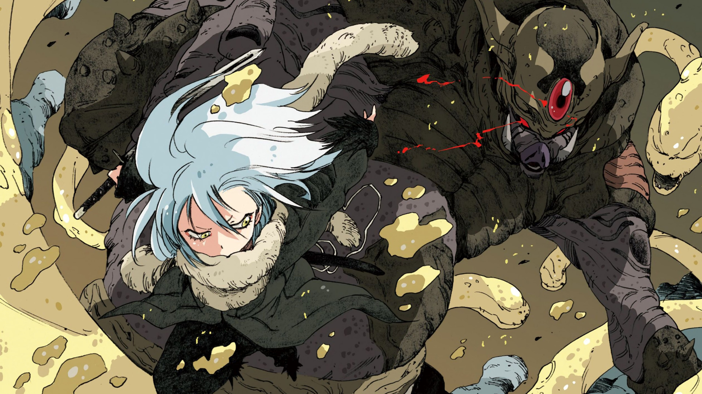

1) Tensei Shitara Slime Datta Ken
Menceritakan kehidupan Satoru Mikami, seorang pekerja kantoran biasa berusia 37 tahun yang bekerja di Tokyo. Di tengah kesibukannya, ketika dia bertemu dengan seorang rekan, dia ditikam oleh seorang penyerang misterius. Ketika dia sadar, dia terlahir kembali sebagai slime di dunia baru.
Pada saat yang sama, ia menyadari bahwa ia memiliki kekuatan yang disebut "Predator" yang memungkinkan dia untuk makan apa saja dan meniru penampilan dan kemampuannya. Setelah bertemu dengan Naga Badai bernama Veldora Tempest, dia bernama Rimuru Tempest.